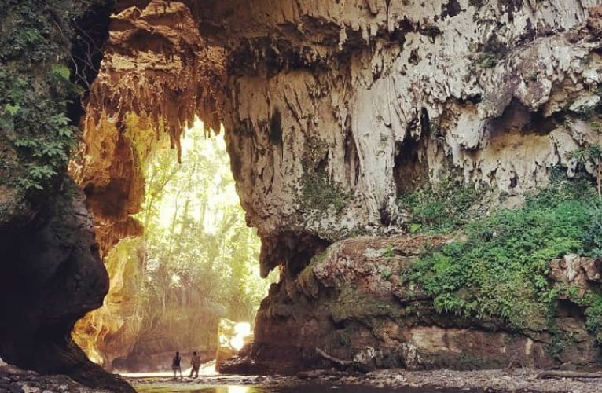
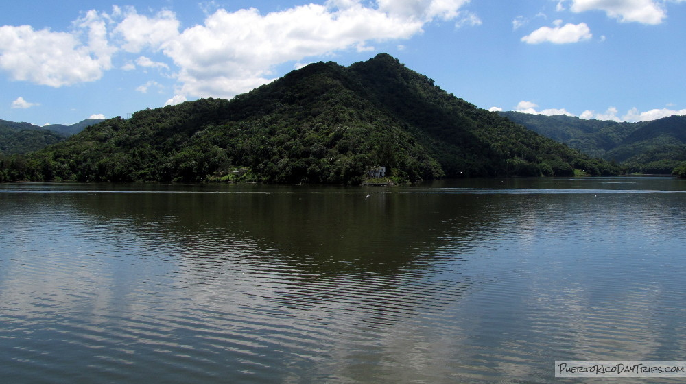
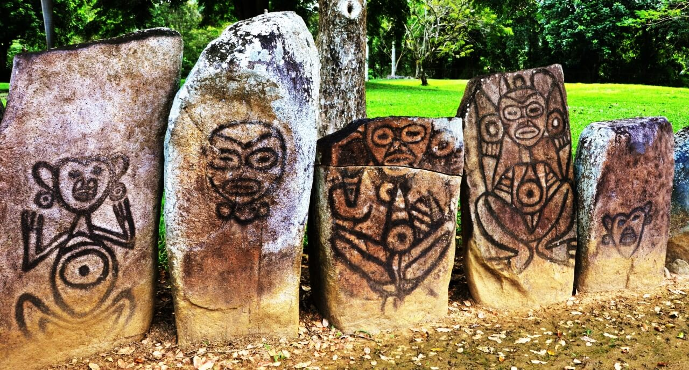

Cueva del Arco
La Cueva del Arco es un atractivo natural impresionante de Utuado, rodeado de vegetación y formaciones rocosas únicas.
Más informaciónUtuado es conocido por su belleza natural, su historia indígena y sus impresionantes paisajes montañosos.
¡Descubre algunos de los lugares más visitados de este hermoso municipio!

La Cueva del Arco es un atractivo natural impresionante de Utuado, rodeado de vegetación y formaciones rocosas únicas.
Más información
El Lago Dos Bocas es uno de los destinos turísticos más populares, ideal para disfrutar de la naturaleza y la gastronomía local.
Más información
Este parque es uno de los sitios arqueológicos más importantes del Caribe, donde se conserva la cultura taína.
Más información